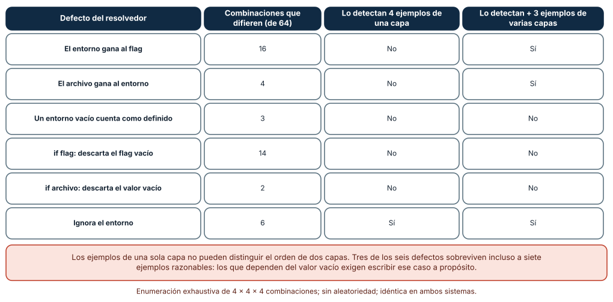
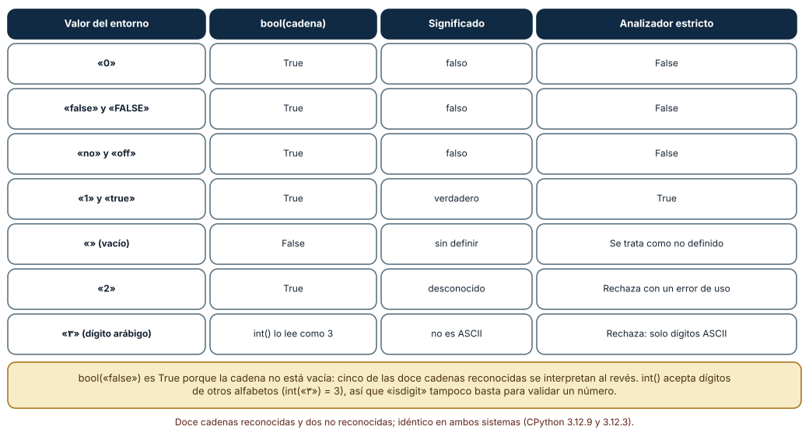
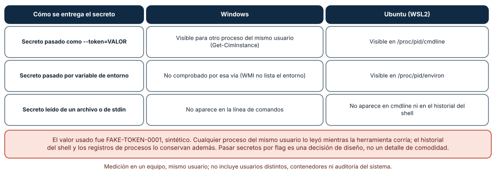

← SE-218 — Entrada estándar, salida y composición por pipes · ↑ Parte 18 · 📚 Índice completo · 🌐 Portal · SE-220 — Códigos de salida, errores y diagnóstico →
Punto profesional y fundamento pedagógico
Punto profesional. La clase existe para decidir de dónde obtiene una herramienta cada valor —valor por defecto, archivo, variable de entorno o flag—, en qué orden se imponen y cómo se comprueba que ese orden se cumple también en los casos extraños: valores vacíos, booleanos escritos de varias formas y secretos.
Por qué aparece aquí. Se sitúa después de Entrada estándar, salida y composición por pipes (SE-218) y antes de Códigos de salida, errores y diagnóstico (SE-220): SE-218 dejó una herramienta que se compone; esta clase pregunta cómo se parametriza sin editar código y sin filtrar secretos, y deja los errores de configuración que SE-220 convertirá en códigos.
Error conceptual que debe corregir. Creer que «el flag manda sobre el entorno y el entorno sobre el archivo» es una regla que se escribe una vez y listo. La regla se rompe en los bordes: un entorno vacío, un flag que vale cero, una cadena «false» interpretada como verdadera.
Secuencia de aprendizaje. Antes de leer la solución, predices cuántas de 64 combinaciones de valores distinguen un resolvedor correcto de seis defectuosos y qué defectos sobreviven a siete ejemplos razonables; después interpretas cadenas booleanas y observas dónde queda visible un secreto sintético. La secuencia usa predicción, explicación propia, contraste y recuperación. ICAP distingue participación de construcción de conocimiento; How People Learn II exige conectar conocimiento previo, contexto y transferencia; la práctica de recuperación respalda producir de nuevo la explicación tras una demora; y Education for Life and Work exige devolución que explique la causa del error.
Evidencia de aprendizaje. config-log.md con la tabla de precedencia, la enumeración de las 64 combinaciones, la tabla de interpretación de booleanos y la medición de visibilidad del secreto. Debe contener predicción previa, observación, explicación causal, contraejemplo y qué hallazgo haría cambiar la precedencia.
Límite de la conclusión. Los resolvedores defectuosos son seis variaciones escritas por el autor; la enumeración cubre cuatro valores por capa y no todos los tipos de dato; el secreto es un texto falso, y solo se miró la visibilidad para un proceso del mismo usuario, no para usuarios distintos, contenedores ni auditoría.
Trazabilidad fuente → afirmación
| Fuente primaria u oficial | Afirmación que respalda | Lo que no prueba |
|---|---|---|
| The Twelve-Factor App: Config | Recomienda guardar la configuración que varía entre despliegues en variables de entorno, separada del código. | No ordena la precedencia entre entorno, archivo y flags. |
| XDG Base Directory Specification | Define dónde buscan los programas su configuración, datos y caché en sistemas tipo Unix. | No aplica a Windows. |
| NO_COLOR | Propone que una variable NO_COLOR no vacía desactive el color. | Es una convención de la comunidad, no un estándar formal. |
| Console Do Not Track | Propone que DO_NOT_TRACK=1 indique que no se envíe telemetría. | Es una convención voluntaria. |
| CWE-214: Invocation of Process Using Visible Sensitive Information | Describe el riesgo de pasar información sensible en argumentos de procesos visibles a otros. | No mide la exposición en un sistema concreto. |
Antes de empezar
Recupera lo aprendido en SE-218: el destino de un flujo cambia el comportamiento. La pregunta activa es: ¿qué valor usa la herramienta cuando hay más de una fuente y quién puede ver ese valor?
Prerrequisitos
- Haber completado
SE-218o poder explicar qué flujo usa cada salida denotas. - Python 3.11 o posterior y un terminal; PowerShell o bash para definir variables de entorno.
- Trabajar con la herramienta
notasy valores sintéticos (FAKE-…), nunca con credenciales reales.
Problema auténtico
notas exportar tiene un formato por defecto (csv), un archivo config.ini del equipo (formato = json), una variable NOTAS_FORMATO que define el guion nocturno y un flag --formato. Un día, en producción se exporta en JSON cuando el guion pide CSV: el entorno estaba definido pero vacío, y el código lo trataba como «definido» y lo ignoraba. Otro día, NOTAS_VERBOSE=false activa los mensajes detallados. Y el token de acceso al sistema de entregas, pasado como --token=…, aparece en la lista de procesos.
Objetivos observables
Al terminar podrás:
- enumerar las fuentes de configuración de una herramienta, su orden y qué cuenta como «valor definido»;
- detectar con una enumeración exhaustiva qué defectos de precedencia sobreviven a un conjunto de ejemplos;
- interpretar booleanos y números del entorno de forma estricta y rechazar lo ambiguo;
- decidir cómo recibe la herramienta un secreto y justificar por qué no es un flag;
- escribir una prueba que fije la precedencia en los casos de borde.
Mapa conceptual
Ver la notación fuente del diagrama
flowchart LR
D[Valor por defecto] --> R[Resolvedor]
F[Archivo] --> R
E[Entorno] --> R
G[Flag] --> R
R --> V[Valor final]
S[Secreto] -->|archivo o stdin| R
R -->|registra la fuente| L[Diagnóstico]El mapa se lee como un embudo: cuatro fuentes entran a un resolvedor que devuelve un valor y, idealmente, la fuente de la que salió; el secreto entra por un canal que no es visible a otros procesos. No describe el orden de lectura de los archivos.
Temas y por qué importan
| Tema | Por qué cambia una decisión profesional | Evidencia mínima |
|---|---|---|
| Fuentes de configuración | Cada fuente tiene un dueño distinto (persona, equipo, despliegue). | Predicción, traza causal y contraejemplo de Fuentes en config-log.md |
| Precedencia | El orden decide quién gana cuando hay conflicto. | Predicción, traza causal y contraejemplo de Precedencia en config-log.md |
| Valores vacíos y falsy | El borde decide si «vacío» significa «no definido» o «definido en vacío». | Predicción, traza causal y contraejemplo de Vacíos en config-log.md |
| Tipos del entorno | Todo en el entorno es texto; interpretarlo mal invierte significados. | Predicción, traza causal y contraejemplo de Tipos en config-log.md |
| Secretos | Un secreto en un argumento es visible a otros procesos. | Predicción, traza causal y contraejemplo de Secretos en config-log.md |
Conceptos y decisiones
1. Cuatro fuentes con dueños distintos
El valor por defecto lo decide quien escribe la herramienta; el archivo, el equipo que la despliega o la persona que la usa; la variable de entorno, quien lanza el proceso (un guion, un contenedor, un planificador); el flag, quien escribe esa invocación concreta. La precedencia habitual —flag, entorno, archivo, valor por defecto— sigue una idea: lo más cercano a la invocación manda sobre lo más general. Pero es una convención de diseño, no un hecho: algunas herramientas ponen el archivo del sistema por encima del de usuario, o permiten fijar valores que ningún flag puede cambiar (política de seguridad). Lo importante es decidirlo y escribirlo.
2. «Definido» necesita una definición
La pregunta que más defectos produce no es «quién gana» sino «¿qué cuenta como presente?». Tres respuestas tienen consecuencias distintas: None/ausente, cadena vacía y valor «falso» (0, false). Un flag --limite 0 es una orden válida —cero filas— que un if flag: descarta. Una variable NOTAS_FORMATO= (vacía) suele ser un intento de «no definir», pero is not None la trata como definida. Una cadena vacía en el archivo puede significar «déjalo vacío» o «no tocar». Cada herramienta debe elegir y documentar; la prueba debe incluir el vacío y el cero.
3. El entorno es texto
Una variable de entorno es una cadena. bool("false") es True porque la cadena no está vacía; int("٣") es 3 porque Python acepta dígitos de otros alfabetos; "1" == 1 es falso. Una interpretación estricta define el conjunto de formas aceptadas —por ejemplo, 1/true/yes/on y 0/false/no/off, sin distinguir mayúsculas ni espacios— y rechaza el resto con un error de uso en lugar de adivinar. Adivinar convierte un error de tipeo en un comportamiento silencioso.
4. Hacer visible de dónde salió el valor
Un resolvedor que devuelve solo el valor obliga a depurar a ciegas. Uno que devuelve también la fuente («formato = json, de config.ini línea 3») ahorra horas. Una opción --print-config o un modo detallado que muestre la configuración efectiva y su origen, enmascarando los secretos, es una herramienta de diagnóstico y también la mejor documentación de la precedencia.
5. Los secretos no viajan como flags
Un argumento de línea de comandos es visible para otros procesos del mismo usuario mientras el proceso corre, y queda en el historial del shell y en los registros de procesos. Una variable de entorno es visible para los procesos hijos y, en algunos sistemas, para quien pueda leer /proc. Las alternativas más seguras son un archivo con permisos restringidos, la entrada estándar o un gestor de secretos; incluso ellas dependen del resto de la seguridad del sistema. La decisión de diseño es qué canal ofrece la herramienta, y no ofrecer el peor.
Seis resolvedores defectuosos frente a 64 combinaciones
Cada capa admite cuatro valores: ausente, cadena vacía, "0" y "x"; con tres capas opcionales (archivo, entorno y flag) hay 4 × 4 × 4 = 64 combinaciones. Se escribió el resolvedor correcto (flag, entorno no vacío, archivo, valor por defecto) y seis variantes defectuosas, y se contó en cuántas combinaciones difieren: el entorno que gana al flag, 16; el archivo que gana al entorno, 4; el entorno vacío que cuenta como definido, 3; if flag: que descarta el valor vacío, 14; if archivo: que descarta el vacío, 2; el que ignora el entorno, 6. Cuatro ejemplos de una sola capa (todo ausente y un valor «x» en cada capa por separado) solo detectan uno de los seis (el que ignora el entorno); sumando tres ejemplos que combinan capas se detectan dos más (el entorno sobre el flag y el archivo sobre el entorno). Los otros tres sobreviven a siete ejemplos razonables y solo caen si se escribe el caso vacío.
def resolver(flag, entorno, archivo, defecto):
if flag is not None: return flag # un 0 explícito es un valor
if entorno not in (None, ""): return entorno # vacío = no definido
if archivo is not None: return archivo
return defecto
Cómo leer la figura. Cada fila es un defecto; la segunda columna cuenta combinaciones de 64 donde su resultado difiere del correcto; las dos últimas dicen si una suite lo detecta. Dónde deja de valer: la enumeración es posible porque hay tres capas y cuatro valores; con diez capas habría un millón de combinaciones, y habría que muestrear o razonar por partes. Los seis defectos son una selección del autor, no un catálogo.
«false» es verdadero
Se evaluaron catorce cadenas posibles de una variable booleana. De las doce que tienen un significado claro (1, 0, true, false, True, FALSE, yes, no, on, off, " true " y "TRUE\n"), bool(cadena) interpretó mal cinco: 0, false, FALSE, no y off dieron True. Un analizador estricto aceptó las ocho formas canónicas (sin importar mayúsculas ni espacios) y rechazó dos: la cadena vacía (tratada como no definida) y "2". Además, int("٣") devolvió 3 y int("１２") devolvió 12: str.isdigit() también acepta ese dígito, mientras que isascii() lo rechaza.

Cómo leer la figura. Cada fila es una cadena; la columna de bool() muestra el error silencioso y la última, la decisión del analizador estricto. Dónde deja de valer: el conjunto aceptado (yes/on…) es una decisión del diseño, no un estándar; otra herramienta puede aceptar menos o distinguir mayúsculas. Lo que no cambia es que «no reconocido» debe ser un error de uso y no un valor por defecto.
Dónde se ve un secreto
Se lanzó un proceso hijo con el argumento --token=FAKE-TOKEN-0001 y la variable SECRETO_SINTETICO=FAKE-ENV-0002, y otro proceso del mismo usuario intentó leerlos. En Windows, Get-CimInstance Win32_Process mostró la línea de comandos completa, con el valor falso; la variable de entorno no se comprobó por esa vía (WMI no la lista). En Ubuntu (WSL2), /proc/pid/cmdline mostró el argumento y /proc/pid/environ mostró la variable. Un secreto leído de un archivo o de la entrada estándar no aparece en ninguno de los dos.

Cómo leer la figura. Cada fila es un canal; las columnas son lo que se observó en cada sistema desde un segundo proceso del mismo usuario. Dónde deja de valer: solo se probó el mismo usuario; hay sistemas que restringen /proc (hidepid) o que aíslan procesos, y otros usuarios o administradores pueden ver más. La medición demuestra la exposición posible, no la que existe en tu entorno.
Definiciones de trabajo
- precedencia: orden en que se consultan las fuentes de configuración cuando hay más de una para el mismo valor.
- valor definido: valor que una fuente aporta según el criterio documentado (presente, no vacío, etc.).
- configuración efectiva: valor final de cada opción tras aplicar la precedencia, con su fuente.
- interpretación estricta: conversión de texto a tipo que rechaza lo no reconocido en vez de adivinar.
- secreto: valor cuya divulgación da acceso o daña a alguien: contraseñas, tokens, claves.
Las definiciones son operativas para la herramienta notas. No convierten términos con historia más amplia en sinónimos y deben contrastarse con la documentación primaria enlazada al final.
Ejemplo mínimo
El fragmento resuelve el formato con las cuatro capas. Antes de ejecutarlo, predice el resultado de la tercera llamada.
def resolver(flag, entorno, archivo, defecto="csv"):
if flag is not None: return flag
if entorno not in (None, ""): return entorno
if archivo is not None: return archivo
return defecto
assert resolver(None, None, None) == "csv"
assert resolver(None, None, "json") == "json"
assert resolver(None, "", "json") == "json" # entorno vacío = no definido
assert resolver("csv", "json", "json") == "csv"La tercera afirmación pasa porque el entorno vacío se trata como no definido. Cambia la condición a entorno is not None y observa qué falla; registra versión y salida.
Ejemplo profesional
notas carga el archivo de usuario (~/.config/notas/config.ini o el equivalente de Windows), después el del proyecto, lee las variables con prefijo NOTAS_, interpreta los booleanos con el analizador estricto y aplica los flags. El comando notas config --efectiva imprime cada opción con su valor y su fuente, con los secretos enmascarados. El token se lee de un archivo (--token-file) o de la entrada estándar; no existe --token. Una prueba parametrizada ejecuta las 64 combinaciones contra el resolvedor y compara con una tabla escrita a mano para los casos de borde; otra confirma que --token no es un flag aceptado.
Compara el caso normal con un entorno vacío, un --limite 0 y un archivo con BOM. La configuración es apropiada cuando esos tres casos tienen una fila en la tabla de precedencia; es peligrosa cuando solo se ha probado «todo ausente» y «todo definido».
Práctica guiada
- Lista las fuentes de configuración de
notasy quién es el dueño de cada una. - Escribe el resolvedor y la tabla de precedencia, y decide qué cuenta como «definido».
- Enumera las 64 combinaciones y compara con seis resolvedores defectuosos.
- Predice cuántos defectos detectan cuatro ejemplos de una capa; añade tres de varias capas y recalcula.
- Interpreta catorce cadenas con
bool()y con el analizador estricto y registra las diferencias. - Lanza un proceso hijo con un secreto falso y comprueba qué ve otro proceso en cada sistema.
- Implementa
notas config --efectivacon enmascarado de secretos y pide a otra persona que deduzca la precedencia solo de su salida.
Ejercicios
- Cuarta capa: añade una capa «política del sistema» que ningún flag pueda cambiar; extiende la enumeración y cuenta cuántas combinaciones cambian de resultado.
- Valores numéricos: diseña la interpretación estricta de
NOTAS_LIMITE(entero entre 0 y 10 000) y enumera diez entradas que debe rechazar, incluidos los dígitos no ASCII. - Enmascarado: escribe una prueba que garantice que
--efectivanunca imprime un valor de una opción marcada como secreta, ni siquiera en un mensaje de error. - Fuente en el error: cuando un valor es inválido, el mensaje debe decir de qué fuente vino; implementa y prueba el caso de un
config.iniconformato = xml.
Reto verificable
Entrega config-log.md con la tabla de precedencia, la enumeración de 64 combinaciones, la tabla de interpretación de catorce cadenas y la medición de visibilidad del secreto. Se aprueba si otra persona ejecuta el código desde un checkout limpio, obtiene los mismos conteos (16, 4, 3, 14, 2 y 6; cinco booleanos mal interpretados) y puede señalar qué caso de borde añadiría. No se aprueba por el número de fuentes soportadas ni por una cobertura de líneas.
Caso conductor
La herramienta notas es el caso conductor de la Parte 18. Esta clase deja su resolvedor, su tabla de precedencia, el analizador estricto y la regla del secreto. SE-220 convertirá los errores de configuración en códigos de salida con significado. Cambia después un solo detalle, la precedencia entre archivo y entorno, y revisa qué guiones, pruebas y documentación dependían del orden anterior.
Preguntas frecuentes
¿Por qué el flag gana al entorno y no al revés?
Por cercanía a la invocación: quien escribe el flag lo hace ahora, para esta ejecución. Pero es una convención. Algunas herramientas ponen primero una política administrativa; lo esencial es que el orden esté escrito, probado y visible en la configuración efectiva.
¿Un entorno vacío es «no definido» o «definido en vacío»?
Depende de la herramienta, y por eso hay que decidirlo. Tratarlo como no definido permite desactivar una variable heredada sin tocar el entorno completo; tratarlo como definido permite fijar un valor vacío a propósito. Se documenta y se prueba en ambos sentidos.
¿Es peor el secreto en una variable de entorno que en un archivo?
Tienen exposiciones distintas: el entorno lo heredan los procesos hijos y es legible en /proc en Linux; un archivo depende de sus permisos y de dónde se guarde. Ninguno es seguro por sí mismo; el archivo con permisos restringidos o la entrada estándar son, en general, las opciones más prudentes.
¿Hay que soportar todas las fuentes?
No: cada fuente añade combinaciones que probar y explicar. Una herramienta pequeña puede ofrecer solo flags y valores por defecto, y añadir fuentes cuando alguien las necesita.
Fallo controlado y diagnóstico
Reproduce el fallo clásico de la clase: un entorno vacío que sobrescribe el archivo. Usa el resolvedor con entorno is not None.
Registra síntoma, entrada mínima, hipótesis, observación que descarta cada hipótesis, causa, corrección y prueba de regresión. Síntoma: NOTAS_FORMATO= (vacío) en el guion y formato = json en el archivo producen un valor vacío y un error de formato desconocido. Hipótesis rivales: (a) el archivo no se leyó; (b) el archivo tiene el valor mal escrito; (c) el entorno vacío se consideró definido. Prueba: con la variable eliminada funciona; con una vacía, falla. Conclusión: la causa es la tercera. Regresión: trata el vacío como no definido, añade las tres combinaciones (entorno vacío con y sin archivo, con flag) a la tabla y a la prueba. No cambies a la vez la definición de «definido» y el orden.
Errores comunes y cómo corregirlos
| Síntoma | Causa probable | Corrección |
|---|---|---|
--limite 0 se ignora | Se escribió if flag: en lugar de is not None | Distinguir ausencia de valor falso |
NOTAS_VERBOSE=false activa el modo detallado | Se aplicó bool() a una cadena | Interpretación estricta con conjunto cerrado |
| Una variable vacía anula el archivo | El vacío se trata como definido | Decidir y probar el vacío en cada capa |
| Nadie sabe de dónde salió un valor | El resolvedor no informa de la fuente | Mostrar la configuración efectiva con su origen |
| El token aparece en la lista de procesos | Se aceptó como flag | Leerlo de un archivo o de la entrada estándar |
Entorno y archivos clave
work/SE-219/
├── README.md
├── notas_config.py
├── experimentos/
│ ├── precedencia.py
│ ├── booleanos.py
│ └── secreto.py
└── evidence/config-log.mdEl README declara plataforma, versión de Python y comandos. Los experimentos usan solo la biblioteca estándar (itertools, subprocess, os) y se ejecutaron con CPython 3.12.9 en Windows 11 y 3.12.3 en Ubuntu bajo WSL2: la enumeración y la interpretación de booleanos fueron idénticas; la visibilidad del secreto difirió por el mecanismo de lectura (WMI y /proc), que se informa como medición de un equipo.
Seguridad, ética y accesibilidad
- los secretos usados en pruebas son siempre sintéticos (
FAKE-…); nunca ejecutes los experimentos con credenciales reales; - el modo de configuración efectiva debe enmascarar los secretos y no imprimirlos ni siquiera en un error;
- los archivos de configuración con secretos necesitan permisos restringidos y no deben versionarse;
- documenta la precedencia con una tabla y una alternativa textual para lectores de pantalla;
- respeta las licencias de las bibliotecas de configuración y atribuye las adaptaciones.
Puente hacia el trabajo con agentes
Un agente al que se le pide «lee la configuración del entorno» suele escribir os.environ.get("X") y bool(...), y sugiere --token por comodidad. Pídele que enumere las fuentes y su orden, que escriba la tabla de precedencia con los casos vacío y cero, que interprete los booleanos de forma estricta y que no acepte secretos como flags. Revisa especialmente si tradujo false en True, si dejó un valor sin fuente en el diagnóstico y si registró el token en algún mensaje.
Transferencia
Traslada el experimento a otra herramienta (por ejemplo, un cliente de despliegue con región, perfil y token): enumera las capas, decide qué cuenta como definido, escribe la tabla de combinaciones y mide qué defectos sobreviven. La transferencia está lograda cuando puedes explicar qué parte de la decisión dependía del número de capas y cuál del tipo de valor, no cuando la tabla se parece.
Evaluación y evidencia
| Criterio | Evidencia para aprobar |
|---|---|
| comprensión | explicación de qué cuenta como «definido» y por qué importa |
| corrección | enumeración reproducible de 64 combinaciones y de catorce cadenas |
| diseño | tabla de precedencia con casos de borde y política de secretos |
| diagnóstico | reproducción del fallo «entorno vacío» con regresión |
| incertidumbre | declaración de qué defectos quedan fuera de las 64 combinaciones |
| reproducibilidad | versiones, comandos, salida y límites declarados |
Fuentes
- The Twelve-Factor App: Config — configuración fuera del código; autoridad: guía de autores, de uso extendido.
- XDG Base Directory Specification — ubicaciones de configuración en sistemas tipo Unix; autoridad: freedesktop.org.
- NO_COLOR — convención para desactivar el color; autoridad: proyecto comunitario.
- Console Do Not Track — convención
DO_NOT_TRACK; autoridad: proyecto comunitario. - CWE-214: Invocation of Process Using Visible Sensitive Information — riesgo de secretos en argumentos; autoridad: MITRE.
- Python:
argparse— valores por defecto y tipos de los argumentos; autoridad: documentación de Python.
Cada fuente respalda el mecanismo indicado; ninguna demuestra que la precedencia de notas sea la que el equipo necesita. Esa afirmación depende de quién despliega y de qué se debe poder sobrescribir.
- Python:
itertools.product— enumeración de las combinaciones. - Python:
subprocess— procesos hijo usados en la medición del secreto.
Límites y siguiente paso
Se ejecutaron tres experimentos con datos sintéticos en Windows y Ubuntu (WSL2) con resultados idénticos salvo el mecanismo de lectura del secreto. Los seis defectos, los valores de cada capa, el conjunto de booleanos aceptados y el secreto falso son supuestos del autor; no se midió ningún despliegue real. La siguiente clase pregunta qué significa para quien invoca que la configuración o la ejecución fallen: los códigos de salida.
Glosario
- precedencia: orden en que se consultan las fuentes de configuración cuando hay más de una para el mismo valor.
- valor definido: valor que una fuente aporta según el criterio documentado.
- configuración efectiva: valor final de cada opción tras aplicar la precedencia, con su fuente.
- interpretación estricta: conversión de texto a tipo que rechaza lo no reconocido en vez de adivinar.
- secreto: valor cuya divulgación da acceso o daña a alguien.
← SE-218 — Entrada estándar, salida y composición por pipes · ↑ Parte 18 · 📚 Índice completo · 🌐 Portal · SE-220 — Códigos de salida, errores y diagnóstico →